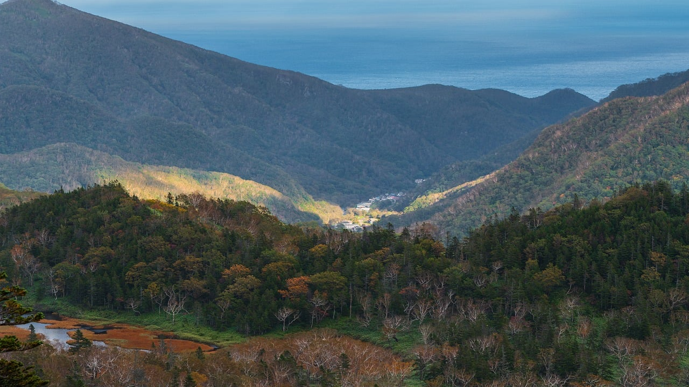

环保历史时间轴

从19世纪的自然保护运动到21世纪的气候危机，探索环保历史上的关键时刻
乔治·帕金斯·马什出版《人与自然》，首次系统讨论人类活动对自然环境的影响，被认为是现代环保运动的开端。
1864
1872
美国建立黄石国家公园，这是世界上第一个国家公园，标志着自然保护运动的开始。
蕾切尔·卡森出版《寂静的春天》，揭示了农药对环境的危害，引发全球对化学污染的关注，推动了环保运动的发展。
1962
1970
美国举行第一次地球日活动，约2000万人参与，标志着现代环保运动的兴起。
联合国人类环境会议在斯德哥尔摩召开，会后成立联合国环境规划署（UNEP），促进全球环境合作。
1972
1987
《蒙特利尔议定书》签署，全球合作限制消耗臭氧层物质的生产和使用，是最成功的国际环保协议之一。
联合国环境与发展大会在里约热内卢举行，通过《里约环境与发展宣言》和《21世纪议程》，推动可持续发展理念。
1992
1997
《京都议定书》通过，要求发达国家减少温室气体排放，是全球应对气候变化的重要一步。
近200个国家签署《巴黎协定》，承诺将全球平均气温升幅控制在工业化前水平以上2°C之内，并努力将温度上升幅度限制在1.5°C之内。
2015
2019
在瑞典环保少女格蕾塔·桑伯格的推动下，全球数百万人参与气候罢工，要求政府采取更强有力的行动应对气候变化。